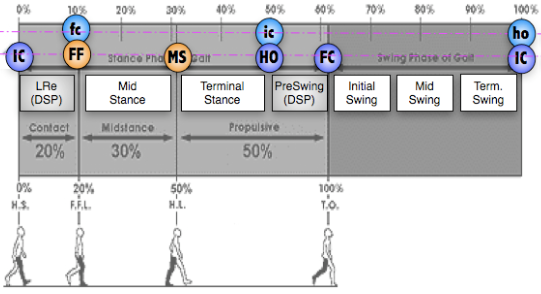

Estimations with inertial sensors
Simurtools Toolbox™ include tools analyze IMUs signals for motion monitoring purposes.
Contents
IMU calibration methods
Different methods for obtaining the calibration matrix for reorienting the initial position of an IMU.
- calibra_mounting: rotational method based on accelerometers, magnetic and triad.
- calibra_anatomical: calibration based on accelerometers for vertical axis.
- calibra_ejez: DEPRECATED. Use calibra_mounting instead.
Estimate 2D orientations from gyro signals
Variables que se pueden estimar con giroscopios.
- orientacioncompas: estimacion de la orientacion mediante la brujula
- orientaciongiroscopo: estimacion por integracion directa el giroscopo
- orientacionkalman: estimacion mediante un filtro de kalman (giroscopo+magnetico)
Estimate 3D orientations from acc, gyro or magnetic signals
Variables que se pueden estimar .
- triad: estimacion de la orientacion 3D mediante acelerometros y giroscopos
Detect Gait Events
Diferentes funciones relacionadas con eventos del paso. Las nombres de las fases y eventos que caracterizan un ciclo del caminar normal se resumen en la siguiente figura:

Los 5 principales eventos que ocurren en un ciclo del paso, referidos al pie que inicia el apoyo (pie de referencia o ipsilatera), son:
- IC: Initial Contact (Heel Strike, Heel Contact, Foot Contact): instante del primer contacto del pie con el suelo.
- FF: Foot Flat: instante en el que toda la planta del pie de referencia se apoya en el suelo (plantar grade).
- MS: Mid Stance: ocurre cuando el pie opuesto al de referencia (contralateral), al balancearse, adelanta al pie de referencia o apoyo.
- HO: Heel Off (Foot Off, Heel Rise, Push Off): instante en el que el talón del pie de referencia deja el suelo.
- FC: Final Contact (Toe Off, Terminal Contact): instante en el que el pie contralateral deja el suelo, normalmente con los dedos del pie.
In the library there are a number of functions to detect these events from inertial signals. In each case, the correspondence between the signal and the actual anatomical event is extracted from the specialized literature. A more detailed description of the anatomical step event can be found in "Observational Gait Analysis", 4ª ed. 2004, D.J. Perry, Rancho Los Amigos National Rehabilitation Center.
- eventosRT: deteccion de eventos del paso de manera secuencial o en tiempo real
- eventosCOGrecto: deteccion de eventos del paso
Estimate Gait Variables
Diferentes funciones relacionadas con variables del paso.
- distancia_arco: estimacion de la longitud del paso mediante el modelo del arco
- distancia_pendulo: estimacion de la longitud del paso mediante un pendulo invertido
- distancia_penduloparcial: estimacion de la longitud del paso mediante modelo del pendulo+desplazamiento
- distancia_raizcuarta: estimacion de la longitud del paso mediante la amplitud de la aceleracion